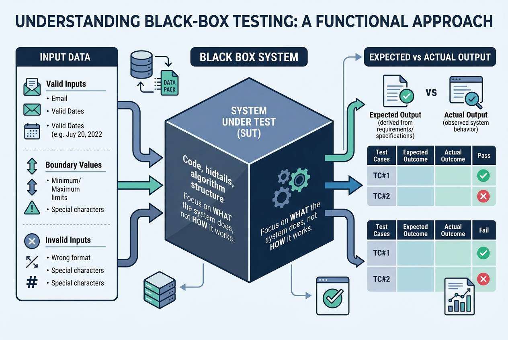
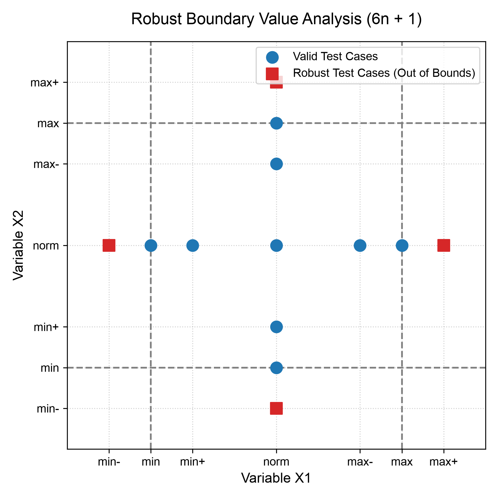
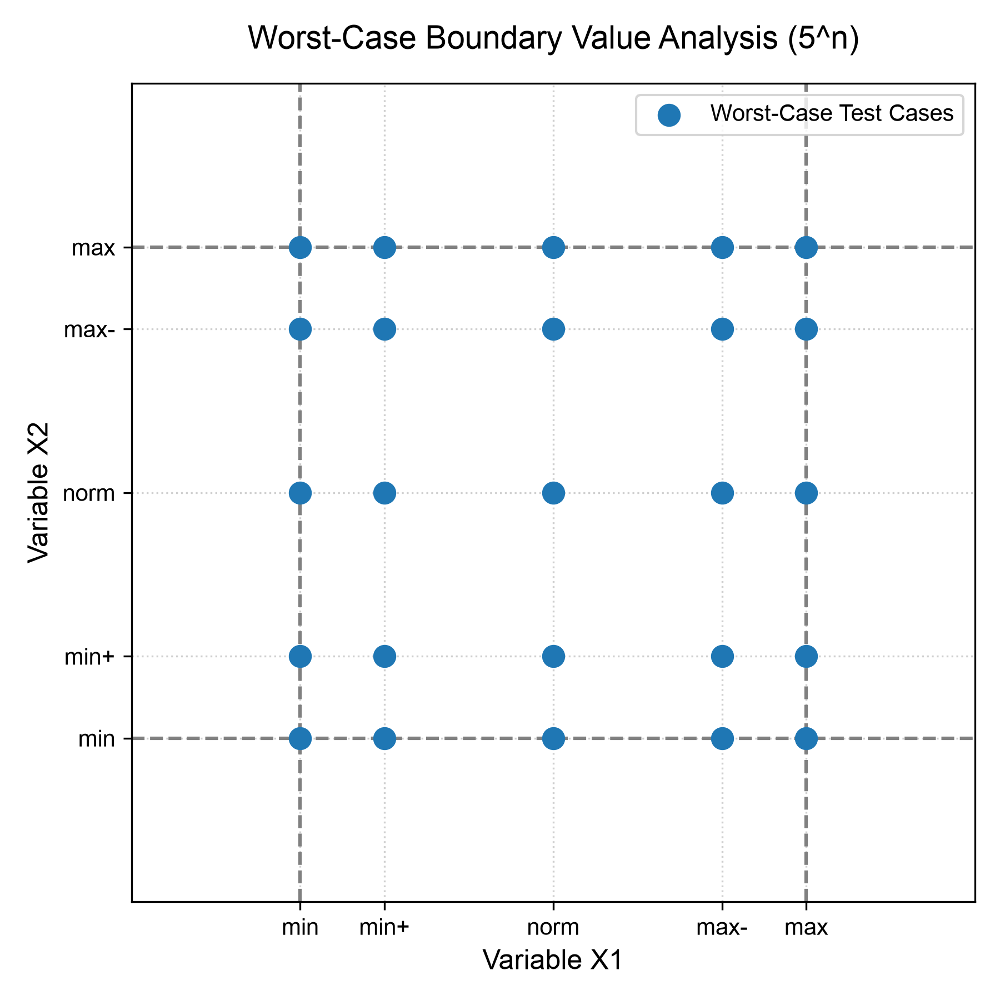
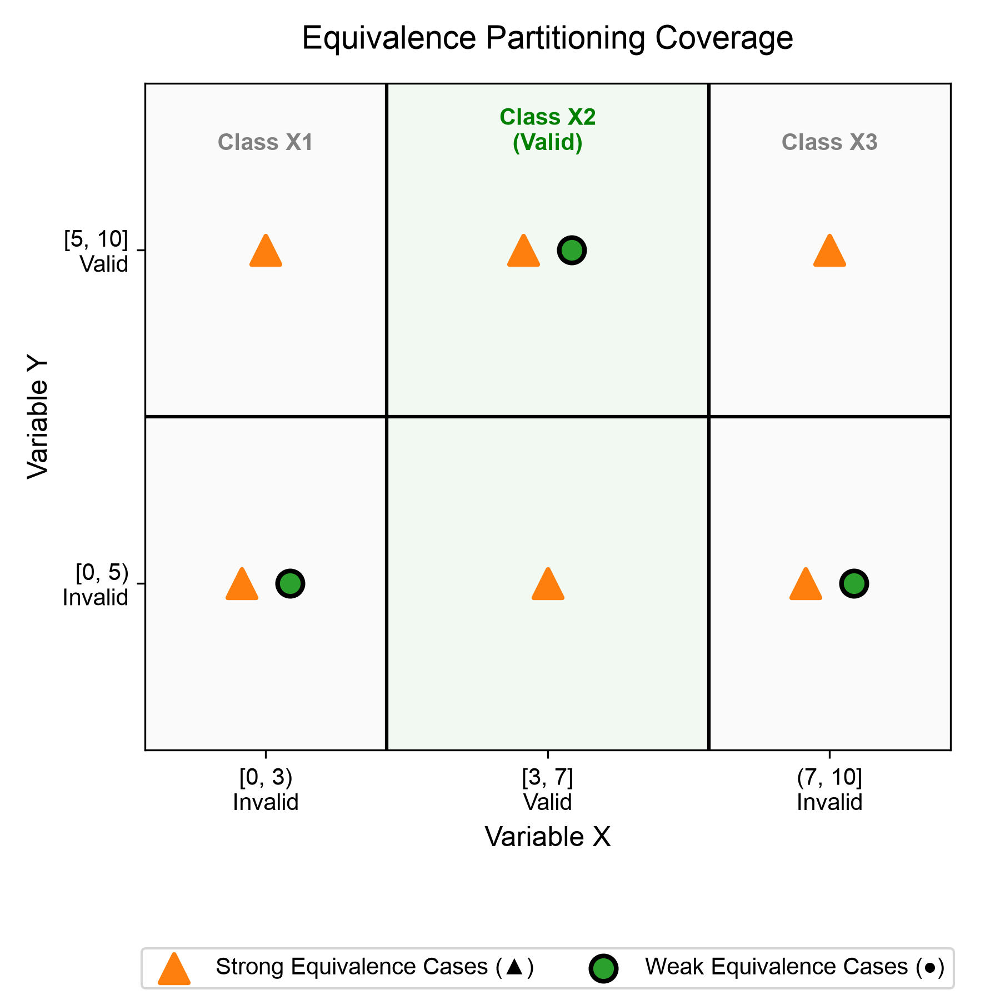
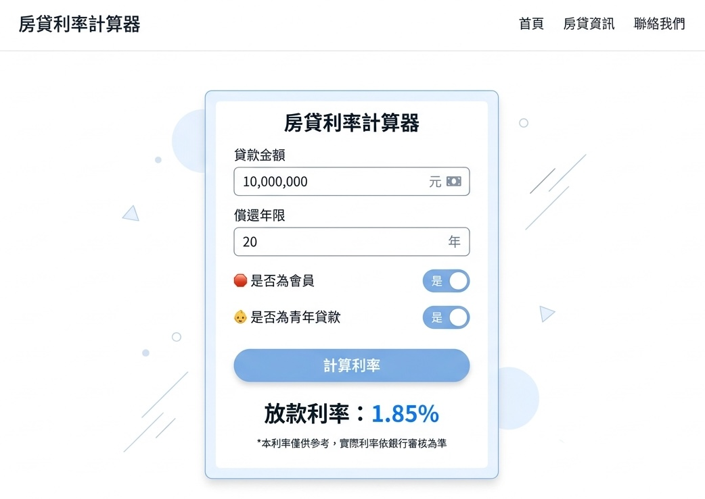
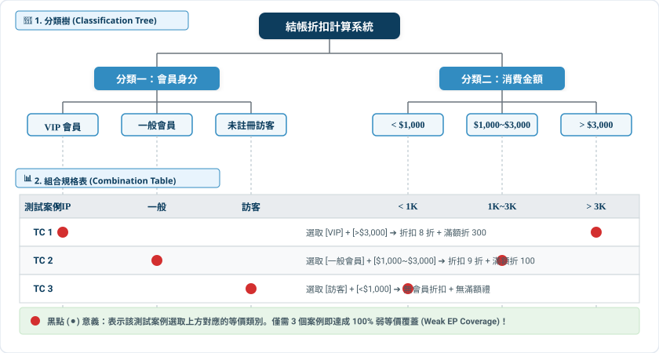
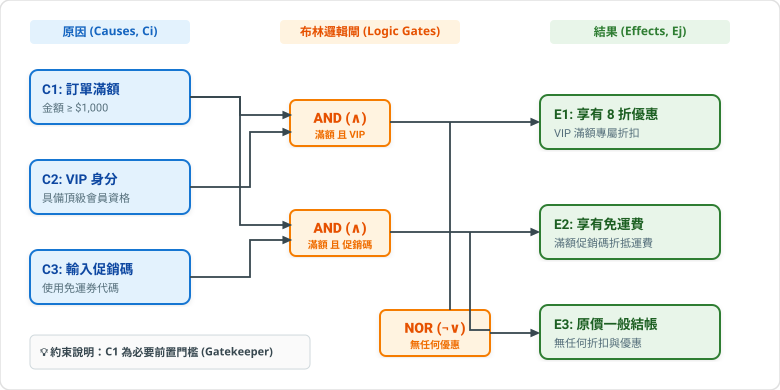
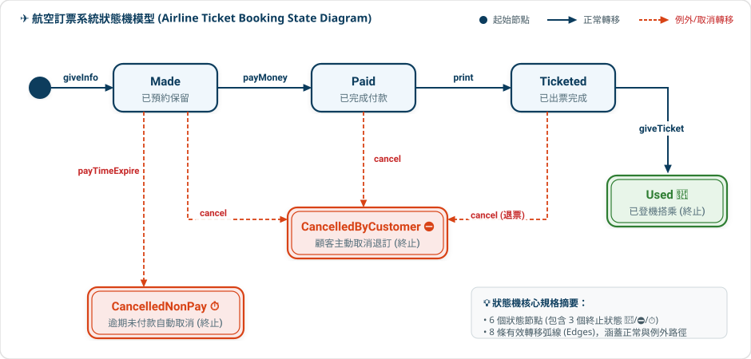

授課教師：薛念林 教授
系統內部就像一個黑盒子，我們不探究它「如何做」， 而是嚴格驗證它在各種極端輸入下，究竟「做了什麼」。 錯誤永遠隱藏在角落——掌握邊界與等價，方能以最小成本擊中最多缺陷。
「不窺探程式碼內部結構，純粹依據規格契約驗證系統外顯行為。 面對無限的輸入空間，以科學化工程方法獵捕邊界缺陷。」
黑箱測試（功能測試/規格測試）聚焦於系統「做什麼 (What)」，而非「如何做 (How)」。

黑箱與白箱並非對立，而是軟體品質保證中視角互補的兩大支柱。
軟體測試第一公理：Exhaustive Testing is Impossible（窮盡測試是不可能的）！
int add(int a, int b)
1979 年出版《The Art of Software Testing》，奠定黑箱測試、等價分割與邊界值分析的理論基石。
「設計 ➔ 寫測試 ➔ 寫程式 ➔ 自動回歸。 讓測試成為可重複執行的安全防護網。」
手動點擊驗收耗時且無法回歸；自動化測試以毫秒級速度驗證最小程式單元（類別或函式）。
// 1. Arrange: 準備計算機實體 Calculator calc = new Calculator(); // 2. Act: 執行加法 int result = calc.add(2, 3); // 3. Assert: 驗證輸出是否為 5 assertEquals(5, result);
JUnit 5 是 Java 現代測試標準。透過標註宣告測試方法，由測試引擎自動執行並呈現綠燈。
@Test
class CalculatorTest { private final Calculator calc = new Calculator(); @Test void testAdd() { assertEquals(5, calc.add(2, 3)); } }
assertEquals(expected, actual)
assertNotEquals(unexpected, actual)
assertTrue(condition)
assertFalse(condition)
assertNotNull(object)
在所有自動化測試斷言中，驗證物件時必須釐清「值相同」與「同一個實體」的本質差別。
equals()
String s1 = new String("SQA"); String s2 = new String("SQA"); assertEquals(s1, s2); // 通過 (內容完全相同)
==
assertSame(s1, s2); // 失敗 (不同記憶體物件) String s3 = s1; assertSame(s1, s3); // 通過 (指向同一位址)
問題情境： 【是非題】在單元測試斷言機制中，「記憶體同一性 (Reference Identity)」驗證的作用與「內容值等價 (Value Equality)」驗證完全相同，兩者都是在比對兩個物件內部的資料欄位是否相等。
動手實作是掌握自動化測試的最佳途徑！打開專案，體驗你的第一個單元測試綠燈。
u05_junit/Calculator.java
u05_junit/CalculatorDemoTest.java
u05_junit/AssertionsDemoTest.java
u05_junit/CalculatorExerciseTest.java
exercise1_testSubtract()
assertAll
Person
assertEquals
assertSame
「錯誤都隱藏在角落！ 大多數的程式缺陷，都發生在邊界條件差之毫釐的瞬間。」
軟體工程界公認：輸入範圍的邊緣（極大值、極小值）比中間值更容易觸發 Off-by-one 缺陷。
<
<=
>
>=
if (input <= 10)
if (input < 10)
min
min+
norm
max-
max
針對 n 個彼此獨立的輸入變數，每次只讓 1 個變數處於邊界，其餘變數皆維持正常值 (norm)。
Total Test Cases = 4n + 1
強固邊界測試 (Robust BVA) 擴充考慮「極限例外值」，驗證系統遭遇非法越界時的防禦容錯力。
min-
max+
Total Test Cases = 6n + 1

當變數之間高度相依、打破「單一錯誤假設 (Single-Fault Assumption)」時，必須採用全笛卡爾積 (Cartesian Product) 進行「最壞情況測試 (Worst-Case Testing)」。

四種邊界測試方法的案例數量與強度對比矩陣。
實務邊界陷阱與混淆點解析：掌握關鍵邊界細節，避免測試盲區。
Math.nextUp(x)
Math.nextDown(x)
邊界測試的工程挑戰：臨界測資密集。若單純連續斷言，前面失敗會直接中斷後面所有邊界檢驗！
@ParameterizedTest
@ValueSource(ints = {...})
AssertionsDemoTest
TriangleBlackBoxTest
問題情境： 【單選題】假設某個受測方法接受 3 個彼此獨立的連續數值輸入參數。若採用「獨立型強固邊界測試 (Independent Robust BVA)」，其設計出的測試案例數量應為多少？
邊界測試的精髓：親自體驗使用 JUnit 5 參數化與群組斷言，秒級捕捉邊界缺陷。
u05_input/bva/TriangleBvaDemoTest.java
assertAll(...)
u05_input/bva/TriangleBvaExerciseTest.java
u05_input/bva/PoolTicketBvaExerciseTest.java
@CsvSource
「把無限的輸入空間劃分為有限的等價群組； 測試其中一個代表，就等於測試了整個群體。」
等價類的核心定義：同一個群組內的任意資料，若一個能找出 Bug，其他也必定能找出 Bug。
單一錯誤假設 vs. 多重錯誤假設在等價劃分中的延伸。

二元搜尋的等價分割不僅看輸入 Key，更必須深入考量陣列長度與命中位置的等價關係。
index = 0
index = -1
index = 1
index = 2
TypeException
單純考慮數值範圍是不夠的；優質的等價劃分必須深入融入業務規則（如大小月與閏年）。
當我們為第一版 M_2 (31天月) 挑選代表值時，隱藏的跨年致命漏洞浮出水面！
2024/04/30
2024/05/01
2024/07/31
2024/08/01
2024/02/28
2024/02/29
2023/02/28
2023/03/01
Day = 1
Month = Month + 1
Year 不變
Month = 1 (重置)
Year = Year + 1 (跨年)
等價類分割黃金法則：只有後續處理邏輯與狀態轉移完全同構的群組，才能被視為同一等價類！
2023/05/15
2023/05/16
2023/04/30
2023/05/01
2023/07/31
2023/08/01
2023/12/15
2023/12/16
2023/12/31
2024/01/01
2024/03/01
設計無效等價類測試案例時的鐵律：每次測試只允許包含一個無效等價類，其餘欄位必須全部合法！
測試架構迷思破解：BVA 不是獨立於 EP 之外的測試，而是「等價類在取樣時的邊界特化策略」。
組合維度與涵蓋策略疑難：在測試成本與品質風險之間取得最佳平衡。
等價類測試的工程挑戰：無效等價類的外顯行為是「防禦防護」，有效等價類則需要管理多維度測試表格。
assertThrows
IllegalArgumentException.class
getMessage()
@CsvFileSource
ParamDemoTest
問題情境： 【單選題】在等價類分割測試 (Equivalence Partitioning) 中，「弱涵蓋 (Weak Coverage)」與「強涵蓋 (Strong Coverage)」分類法的主要區別是什麼？
等價類實戰重點：使用 @CsvSource 建立多維度測試表格，以 assertThrows 驗證非法輸入的防禦性邏輯。
u05_input/ep/BinarySearchEpDemoTest.java
u05_input/ep/ParamDemoTest.java
@ValueSource
u05_input/ep/PasswordValidatorEpExerciseTest.java
「當組合爆炸讓窮盡測試成為不可能， 全成對測試用數學奇蹟，抓出 90% 的交互作用缺陷。」
美國國家標準與技術研究院 (NIST) 研究：軟體系統中絕大多數缺陷皆由「單一變數」或「雙變數配對」所觸發。
3^10 = 59,049 個測試案例！
透過交錯法與成對匹配，案例數量從全乘積的 12 個直接砍半至 6 個，覆蓋率絲毫不減。
(時間-星期、星期-會員、時間-會員兩兩組合 100% 涵蓋！)
尋找數學上的「絕對最小成對測試集」等價於最小集合覆蓋問題，屬 NP-Hard 難題。
OS=iOS
Browser=IE
實務工程皆採用啟發式工具秒級生成；本課程 LabDemo 已深度整合 Java 原生 AllPairs4J。
@TestFactory
.pict

成對測試的工程挑戰：案例矩陣是由演算法在執行期動態產生的，傳統靜態 @Test 無法彈性接收！
LoanCalculatorPairwiseTest
DynamicTest
問題情境： 【單選題】全成對測試 (Pairwise / All-Pairs Testing) 能夠大幅縮減測試案例數量，其在軟體工程上的核心理論依據是什麼？
全成對實戰重點：使用 AllPairs4J 演算法啟發式生成成對矩陣，並以 @TestFactory 動態展開測試節點。
u05_input/pairwise/LoanCalculatorPairwiseDemoTest.java
testPairwiseMatrixGeneration()
dynamicPairwiseTests()
u05_input/pairwise/LoanCalculatorPairwiseExerciseTest.java
AllPairs.AllPairsBuilder
「從海量組合中提煉精實測試子集； Daimler-Benz 分類樹，將抽象輸入域轉化為視覺化規格矩陣。」
面對數千個潛在案例，透過工程優化策略進行剪枝，保留最高殺傷力的測試子集。
Classification Tree Method (CTM) 源自 Daimler-Benz，現為 ISO/IEC/IEEE 29119-4 認可之圖形化黑箱測試標準。

實戰目標：測試「滿額與會員折扣功能」，用 CTM 打點規格矩陣落實不同的覆蓋準則。
分類樹的工程挑戰：打點規格表具有豐富的業務情境，傳統英數方法名在報表中難以理解與追蹤！
@DisplayName
testCheckout1()
@DisplayName("TC1: VIP會員且滿3000元刷卡 ➔ 享8折與滿額折300")
DisplayNameTest
@DisplayNameGeneration
@Nested
@Nested class VIPMemberTest
@Nested class Over3000AmountTest
問題情境： 【單選題】關於「正交表測試 (Orthogonal Array Testing, OATS)」與一般「全成對測試 (Pairwise Testing)」的比較，下列敘述何者正確？
分類樹實戰重點：將打點規格矩陣 1:1 轉化為 @DisplayName 繁中語意化規格與 @Nested 階層測試。
u05_input/ctm/DisplayNameDemoTest.java
@Nested class LeapYearRules
u05_input/ctm/OrderDiscountCtmExerciseTest.java
「從規格描述的邏輯網絡中， 理清所有原因、結果與制約條件，系統化導出精準決策。」
Glenford Myers 提出因果圖法：將自然語言規格轉譯為布林邏輯電路網絡，作為推導決策表的正規工具。
業務需求：① 滿額且為 VIP 享 8 折；② 滿額且輸入促銷碼享免運；③ 未達任何門檻則原價結帳。

初始規則共有 2^3 = 8 種。透過不相關條件 (- Don't Care) 化簡，收斂為 4 條精準規則。
-
CAR 決策表中的每一條化簡規則 (Rule)，直接 1:1 映射為一組標準黑箱測試案例！
amount = 1200, isVip = true, promo = null
discount = 0.8, freeShipping = false
amount = 1200, isVip = false, promo = "SHIP"
discount = 1.0, freeShipping = true
amount = 1500, isVip = true, promo = "SHIP"
discount = 0.8, freeShipping = true
amount = 800, isVip = true, promo = "SHIP"
discount = 1.0, freeShipping = false
三角形判斷邏輯化簡後的 CAR 決策表，精確對應 6 條測試規則。
決策表的工程挑戰：每條化簡規則包含多條件組合，且常同時激發多個系統動作！
問題情境： 【單選題】在軟體測試實務中，下列哪一種受測情境最適合優先採用「決策表測試 (Decision Table Testing)」來設計案例？
決策表實戰重點：將 CAR 促銷或三角形化簡規則表，直接 1:1 轉化為 @CsvSource 測試矩陣與 assertAll 斷言。
u05_input/decision/PromotionDecisionDemoTest.java
u05_input/decision/PromotionDecisionExerciseTest.java
「沒有回傳值的 void 方法怎麼測？ 答案在於物件內部的狀態轉移。」
狀態機將系統行為抽象為狀態、事件與轉移弧線。測試核心：給定前置狀態與激發事件，斷言次態與動作。

測試設計必須精準區分「主流程 Happy Path」與「例外中斷路徑」，確保所有終止狀態皆可正確轉移。
Made
Paid
Ticketed
cancel
CancelledByCustomer
CancelledNonPay ⏱
狀態覆蓋 (Node) vs. 轉移覆蓋 (Edge)：轉移覆蓋強度遠高於狀態覆蓋。
giveInfo
payMoney
print
giveTicket
payTimeExpire
狀態機測試的工程挑戰：物件有狀態記憶，若測試間狀態殘留將導致假警報；void 動作需透過狀態查詢驗證。
@BeforeEach
WhenNew
isEmpty()
assertThrows(EmptyStackException.class)
AfterPushing
isNotEmpty()
問題情境： 【單選題】在狀態測試 (State Testing) 中，關於「狀態覆蓋 (State Coverage)」與「轉移覆蓋 (Transition Coverage)」的強度關係，下列敘述何者正確？
狀態機實戰重點：使用 @BeforeEach 重現特定狀態前置，運用 @Nested 建立與狀態機 1:1 同構的測試階層。
u05_scenario/state/StackStateDemoTest.java
PlayerStateDemoTest.java
@Nested class EmptyStateTests
@Nested class FullStateTests
pop()
EmptyStackException.class
assertFalse(stack.isEmpty())
u05_scenario/state/StackStateExerciseTest.java
EmptyStackException
「跳出單一欄位與單元函數的微觀視角， 從真實使用者的業務場景，驗證端對端 (End-to-End) 系統行為。」
ISTQB 國際認證五大黑箱技術之一：基於需求規格中的 Use Case / User Story，驗證跨元件的端對端業務流。
以典型 ATM 提款使用案例，推導系統級端對端黑箱測試案例矩陣。
端對端場景驗收：模擬真實 ATM 提款交易，覆蓋基本流、替代流與例外流防禦。
u05_scenario/usecase/AtmWithdrawService.java
u05_scenario/usecase/AtmUseCaseDemoTest.java
u05_scenario/usecase/AtmUseCaseExerciseTest.java
CARD_LOCKED
「規格書永遠寫不完所有現實的混亂。 頂尖測試者的直覺、歷史缺陷經驗與即時探索，是抓出致命漏洞的終極防線。」
Glenford Myers 黑箱三大基石之三：基於過往 Defect 統計、工程師易犯錯誤與防禦性思維的「直覺性攻擊」。
null
""
\r\n
' OR 1=1--
<script>
1/0
Integer.MAX_VALUE + 1
0.1 + 0.2
Cem Kaner & James Bach 發揚：測試學習 (Learning)、測試設計 (Design) 與測試執行 (Execution) 同步交織進行。
破壞性直覺進擊：運用歷史缺陷清單與探索性思維，獵捕規格未載明的邊界漏洞。
u05_scenario/experience/UserProfileService.java
u05_scenario/experience/ErrorGuessingDemoTest.java
" "
Integer.MAX_VALUE
trim()
u05_scenario/experience/ExploratoryExerciseTest.java
@
IllegalArgumentException
「不再人工苦思特定測資， 而是宣告系統永不妥協的數學不變量。」
從 Example-Based 走向 Property-Based：讓框架自動產生萬組極端隨機測資，尋找致命反例。
2000 年發明 QuickCheck，開創「不要寫測試案例，定義程式屬性」的現代測試典範。
jqwik
Hypothesis
不寫死特定數值，宣告永恆真理：交由框架生成海量隨機測資並自動二分尋找極簡反例。
@Property
@ForAll
[0, -1]
問題情境： 【是非題】在屬性基礎測試 (Property-Based Testing, PBT) 中，我們不需要手動為每一組測試寫出確切的預期輸出數值，而是定義程式執行時必須永遠維持的「屬性或不變量 (Invariants)」，並交由測試框架隨機生成大量測資來自動尋找反例。
突破 Test Oracle 困境：當難以斷言「輸出 y 的絕對數值」時，檢驗「輸入變換後的相對關係」。
頂尖 QA 如何設計 MR？掌握四大不變量思維，即可通殺 90% 以上複雜系統。
以相對關係取代絕對數值：透過輸入變換與相對不變量，驗證黑箱核心邏輯的正確性。
SQA 2.0 評測工具鏈：結合理論觀念，在 CI/CD Pipeline 落地自動化品質門檻。
{ "metric": "Faithfulness", "score": 0.95, "has_hallucination": false, "rationale": "所有陳述皆可在 Context 找到依據" }
告別特例斷言，擁抱不變量規格：體驗 jqwik 海量測資收縮與搜尋引擎變質關係驗收。
u05_pbtest/PropertyBasedDemoTest.java
u05_pbtest/MetamorphicDemoTest.java
u05_pbtest/PropertyBasedExerciseTest.java
a * b == b * a
u05_pbtest/MetamorphicExerciseTest.java
Search("software") == Search("SOFTWARE")
本章課堂互動 (CCQ 1 ～ CCQ 8) 官方標準解答與核心觀念解析總整理。
equals
id: sqa-ch05-ccq1
id: sqa-ch05-ccq2
id: sqa-ch05-ccq3
id: sqa-ch05-ccq4
id: sqa-ch05-ccq5
id: sqa-ch05-ccq6
id: sqa-ch05-ccq7
id: sqa-ch05-ccq8